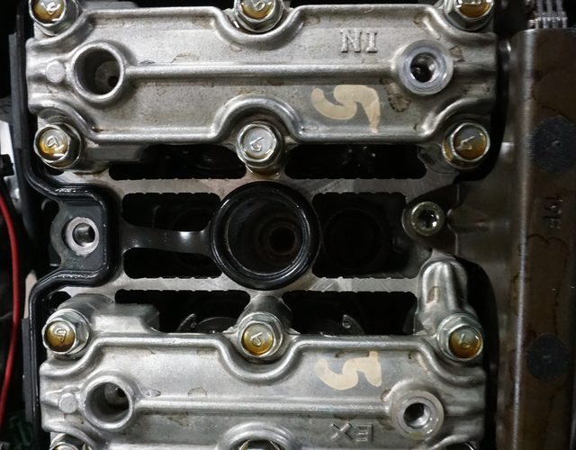

BLAYDE MANUAL // PDF PATCHER
the whole idea, in one picture
Pick your PDF manual. We identify it, check the registry, and patch in contributed photos.
Turn this
into THIS!

Revive your old vehicle manuals.
Powered by the community.
100% local
No PDF content is uploaded anywhere. It stays on your device the whole time.
No AI
Just pattern-matching and text recognition, same as any scanner. More in the FAQ.
Free & open source
No account, no paywall, ever. Fork it, audit it, run your own copy.
Community-run
Maintained by real vehicle owners, not a company. Anyone can become a maintainer.
Pick your PDF manual
Don't have your PDF handy? Browse registered vehicles →
[..........] waiting
Pick a PDF to begin